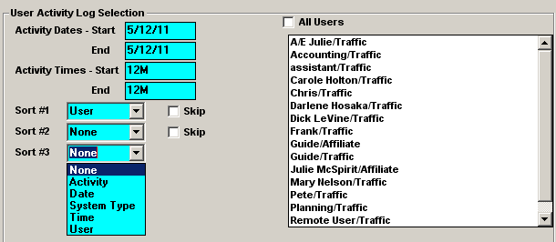

Tracking User Changes
Counterpoint has built in tracking programs that allow you to monitor the workflow within your system. This section describes ways you can monitor what is being done in the system, when various tasks were done, and who did them.
Setup
User Options
The "Activity Log" button can be set to Red (disallowed) or Yellow (view only). Set it to Yellow to allow the user to show the activity log in Accessories -> User Status.
The "Allowed to Initiate Shutdown" setting can be set to green to allow the user to initiate a system shutdown.
User Activity Report
The User Activity Log produces a footprint of users’ activity throughout the traffic and affiliate systems, logging tasks and reports launched. The report shows all data logged in traffic and Affiliate, but can only be printed from the Traffic System.
User Activity Report Set Up
In the Site Options -> General tab, indicate the number of days for which the report should retain activity in the "Retain User Activity Log for X Days" field.
User Screen
The User Activity Log displays the name entered in field in the User Screen. If one person has more than one sign on name, it is suggested that the "Name on Report" be different. If the "Name on Report" field is blank, the user’s sign on name is used.
Accessing the Report
From the Report screen, scroll to the List Section and find User Activity Log.
Report Selectivity

The Activity dates will automatically populate based on the "Retain User Activity Log for X Days" setting. The end date is today’s date, and the start date is today’s date minus the number of days to retain. The times are alterable, but are defaulted to 12m-12m.
Up to 3 sorts can be selected, which are used as the major, intermediate and minor sort fields. If date and/or time is not a selected sort field, they will be automatically used as the minor sorts (time within date).
Report Contents
- User/System Type – This is pulled from the User Name on Report field in the User Screen. If blank, the sign-on name is shown, followed by Traffic or Affiliate user
- Activity – Lists what event has been launched
- For the Advertiser Clearance, Advertiser Compliance, Advertiser Fulfillment, Advertiser Placement, Fed vs Aired, Pledge vs Aired, Program Clearance, Radar Report, Spot Clearance reports, the time it took to clear the clear the temporary report file will be noted.
- For example: If the Program Clearance report generated, the User Activity Log report will show "Program Clearance: Clear PCR" in the Activity column, followed by the date and time and the duration of the activity.
- Start/End Dates & Times - Date and times are always sorted in a descending order, to see the most current activity first
- The absence of an end date indicates that the task either was not completed when the report was generated, or was never successfully completed
- Duration –The length of time for the event. It can be used a timing tool for various tasks
- Status – In progress, Complete, Aborted
- CSI Date – The CSI date is the date the Counterpoint system was set to at the time the activity was performed. If this date differs from the start/end date, it indicates that the Counterpoint date had been altered on the user’s system
Traffic Tracking Reports
Spot Placement
The Spot Placement report lists the status of every spot within the selected date span for the selected contract(s). The ordered vehicle and daypart is shown in addition to the airing vehicle and exact aired times. Each spot is also given a status, such as scheduled, MG, canceled, etc. There is a parenthetical notation ( ) for spot moves made in relation to the last log date.
This report is useful in tracking spot moves, if they were made in post log, and whether they were made before or after the last log date.
Copy Inventory by Entry Date
The Copy Inventory by Entry Date report lists the copy entry date, Cart number, length, Advertiser, ISCI, Creative Title, and Rotation Start and End Dates for each piece of copy within a date span. This report will also show Live Copy Script.
Contract History
The Contract History Report logs all revisions made to contracts, noting the date and time the revision was made, the user who made the revisions, the user’s status at the time, and the differences between versions by line number.
This is a helpful preliminary tool in determining when changes were made and by whom.
Live Log Activity
The Live Log Report will show you all activity for a live show. It lists the vehicle, its aired date, who logged the show, and the time at which it was logged.
Affiliate Tracking Reports
Web Export Log
After every export, successful or unsuccessful, a record of the export is recorded in the WebExportLog.Txt file, found in the Messages folder. Results from the most recent export will be at the bottom of the report.
The file will show the date and time of the export, the user who generated the export, and what was exported.
Web Import Log
After every import, successful or unsuccessful, a record of the import is recorded in the WebImportLog.Txt file, found in the Messages folder. Results from the most recent export will be at the bottom of the report.
The file will show the date and time of the import, the user who generated the import, and what was imported.
Export History
The Export History shows a 7-day history of the exports that have been generated and the completed or error statuses.
Details show the number of vehicles, the user that requested the export and the date/time the export started and ended.